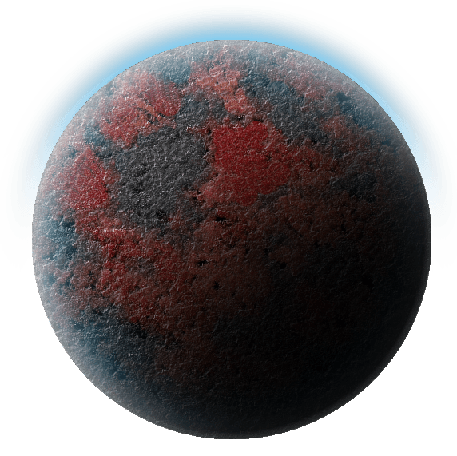
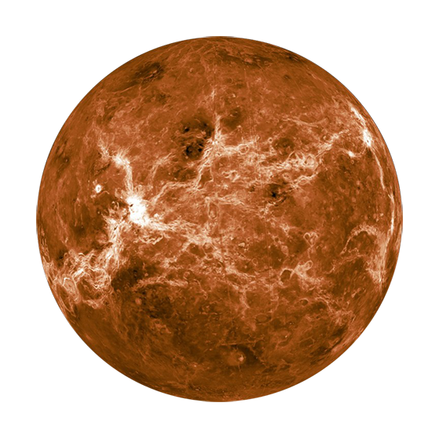
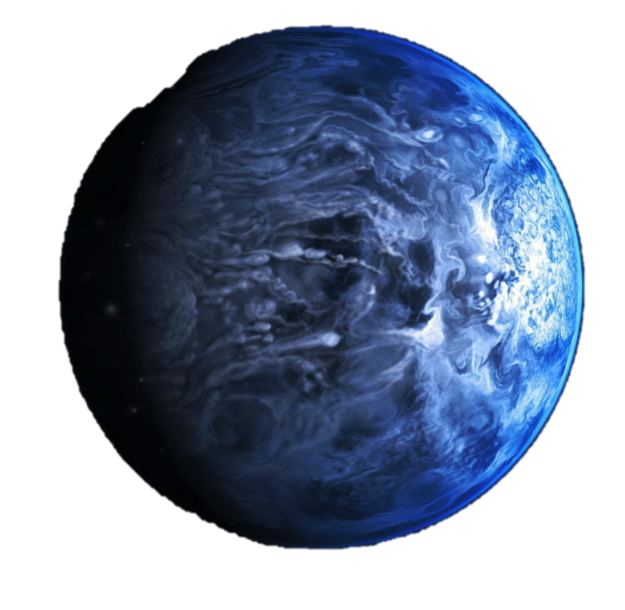

Star:
The Iperos System houses a red giant star, which falls outside of the traditional letter
classifications for
celestial bodies.
Digios and Laramas, Foremost Orbits
 
Two scorched, inhabitable rocks circle closely to the burning red sun. Early settlers of the sector
theorized that ancient civilizations once thrived on these hypothetically vibrant worlds, but in reality
these are
mere unfounded legends told to pass the time. The Iperos star expanded long before the sector was
ever
settled,
burning away any traces of life that may have populated these worlds. Travel to these scorched former
planets is
inadvisable, and would be lethal for most sentients without protective suits. Even starships may find
themselves
succumbing should they fly too close to this system's sun, should they not be fitted with suitable solar
shielding.
Kilius, Third Orbit
The heart of the Sapius Corporation’s mining operations in the sector. The desolate surface of
Kilius,
similar
to its sister planets closer yet to the blazing red sun, has been scorched barren, albeit to a lesser
extreme.
Still, standing on the planetary surface without protective gear would be suicide for most species.
The Kilius Installation: A massive, solar shielded mining structure sits on the planet's
surface,
though most of Sapius’ expansion has been downward into the depths of Kilius. The
Kilius Installation acts
as
Sapius’ mining hub. Though there are several sites across the planetary surface, travel between
them is done
completely beneath the surface through burrowed tunnels. Magnetic guided trains carry large quantities
of
unrefined spice through these tunnels from the various dig sites to the main Installation. A massive
underground
hanger dug into a preexisting cavern ships out large quantities of unrefined spice daily on
Sapius
transports.
The mines themselves run deep, and are worked by an army of Imperial prisoners and slave droids.
Iperos, Fourth Orbit
The headquarters of the Sapius Corporation. A large, mostly oceanic world, with large swaths of
sea water
covering its expansive surface.
Iperos frequently feels the heat from the system's massive sun, causing most planetary life to
adapt and
retreat
far below the cold oceanic depths. Dried coral islands occasionally spot the surface of the world,
though in
terms of natural rock formations, not much can be found. When the Empire first came to the
sector, deep
ocean
oil drilling was attempted for about a year, with little success. The Sapius Corporation came
soon after,
building a massive metallic surface hub above the abandoned drill sites.
The Sapius Corporation:
When the Empire came to the Sector, so did their businesses. Sapius was started by a
coreworld
entrepreneur
willing to sell his soul, seeking Imperial financing to start a business and turn a profit.
Early in the
Empire’s scouting of the Sector, trace veins of Sansanna spice were discovered on
the desolate surface
of
the planet Kilius. As the nearby Marjora System was heavily colonized by citizens and
armies of the
Galactic
Empire, the shining new headquarters of one of the galaxy's newest corporations sprouted out
from the
seas
of Iperos.
A sizable private army has been build by Sapius to protect their own interests, despite them falling
under
the mantel of the Galactic Empire.
The Iperos Installation:
The gigantic shining structure in the vast oceans of Iperos acts as Sapius
Corporation's main
headquarters.
The Installation stands out of the sea triumphantly, with massive defense systems and
landing pads built
onto its surface. The majority of Sapius’ Corporate business offices rise in
individual towers from the
top
of the installation. Down below the water level, the Sansanna spice refinery
purifies the product mined
on
nearby Kilius. Once undergoing refinement, transports disperse it across the sector,
and the greater
galaxy.
On paper, the spice is refined for medical products, though the nature of the business
ensures some of
the
spice falls into the hands of sentients to be used for illicit purposes.
Potential Roleplaying opportunities:
The massive Iperos Installation acts as a corporate hub for the sector. Characters
journeying to this
technological wonder may be acting under the employ of Sapius, or perhaps, their current
leash-holders,
the
Galactic Empire. Alternatively, independent smugglers or criminals may seek to
pirate unrefined spice on
its
way into the factory. Covert rebels and members of the New Republic may take an interest in
the
corporation’s handling of slave labor on nearby Kilius. Or, the Empire’s slow
pollution and lack of
preservation of the beautiful seas of Iperos.
Beneath the waves of Sapius’ headquarters, the automated refinery casts a metaphorical shadow
over the
shining beacon that is the Iperos Installation. Long tubes carry waste materials far from the
Installation,
polluting the southern seas. It’s only a matter of time before corporate renegades, or perhaps the
natural
order of things, begin to turn on Sapius.